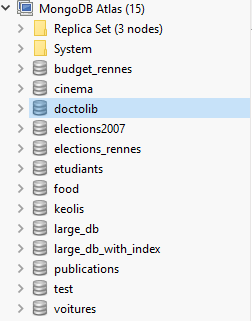
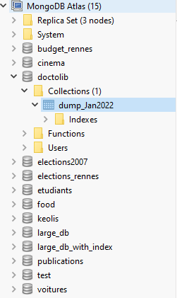
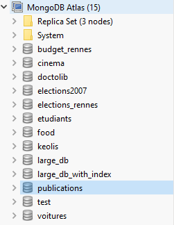
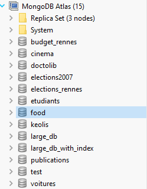
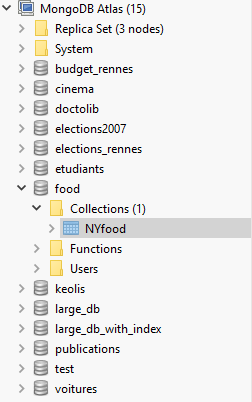

Bases MongoDB
La base doctolib contient des informations, récupérées en janvier 2022, relatives aux centres de vaccination contre la Covid19 en Bretagne.


La base publications contient les informations relatives aux publications de scientifiques du laboratoire IRISA pour l’année 2021 (extraites du service HAL).


La base food contient des informations relatives à des restaurants de New-York.


 Liens entre les auteurs de publications scientifiques
Liens entre les auteurs de publications scientifiques